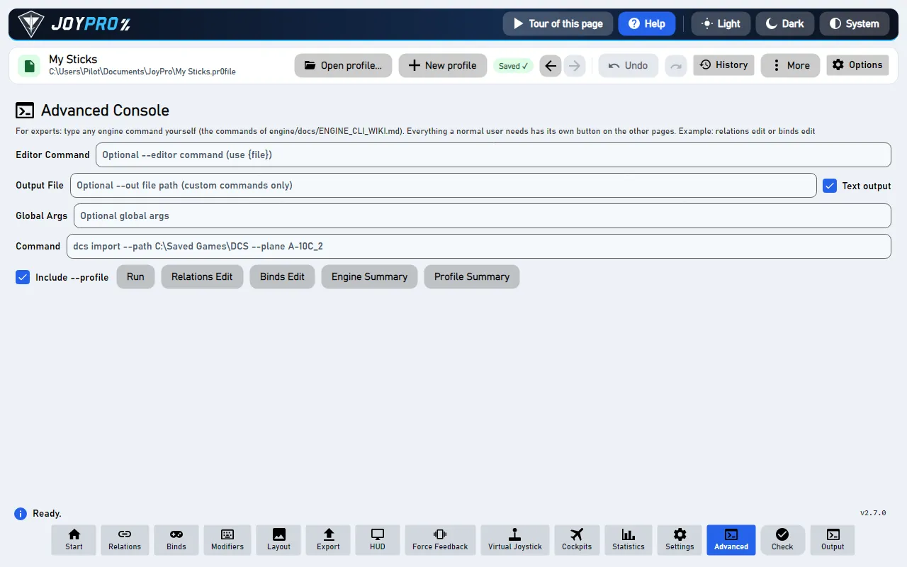
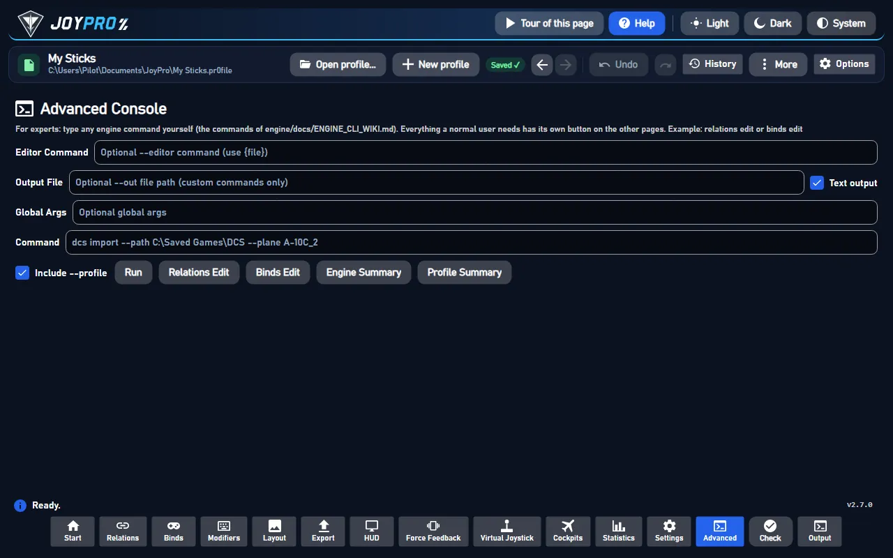

#Output testuale
Casella di spuntascrittiOn: un comando scritto qui risponde con testo leggibile.
Off: risponde in JSON, come lo leggono la GUI e gli script.
La pagina Avanzate è la console per esperti. Ogni funzione che serve a un utente normale ha il suo pulsante nelle altre pagine; qui scrivi tu i comandi del motore di JoyPro, esattamente come li descrive la riga di comando del motore, e la risposta appare nel pannello Output.


flowchart LR A["Casella del comando"] --> B["Esegui"] G["Impostazioni"] --> B P["--profile"] --> B B --> E["Il motore di JoyPro"] E --> O["Pannello Output"] E -.-> R["Relazioni e<br/>Assegnazioni aggiornate"]
Di solito no. C'è per tre casi:
profile summary, per vedere cosa succede.engine, per esempio profile summary o relations list --game DCS.I comandi scritti qui possono cambiare il tuo profilo e i tuoi giochi esattamente come fanno i pulsanti. Ogni modifica del profilo è una versione nella Cronologia (barra in alto), quindi puoi tornare indietro; i file dei giochi vengono salvati in un backup prima di un'esportazione.
| Casella | Cosa aggiunge | Opzione del motore |
|---|---|---|
| Comando editor | Il programma che si apre per Modifica relazioni / Modifica assegnazioni (e per relations edit / binds edit scritti a mano). {file} sta per il file temporaneo, ad es. code --wait {file}. Vuoto: Blocco note. |
--editor (globale) |
| File di output | Scrive la risposta di un comando scritto a mano in questo file invece che nel pannello Output. Solo per i comandi scritti qui; i pulsanti delle altre pagine non lo usano mai. | --out (globale) |
| Output testuale | Attivo (predefinito): testo leggibile. Disattivo: JSON, come lo leggono gli script. Solo per i comandi scritti qui. | --text (globale) |
| Argomenti globali | Qualsiasi altra opzione globale messa prima del comando, ad es. --status true. |
le opzioni globali |
| Comando | Il comando e le sue opzioni. Le virgolette tengono insieme un percorso con spazi. | i comandi |
| Includi --profile | Aggiunge --profile "<open profile>". Togli la spunta per i comandi che non hanno bisogno di un profilo (db summary, games installs). |
--profile |
relations list e binds list scritti qui aggiornano con la risposta anche gli elenchi delle pagine Relazioni e Assegnazioni.$ engine --profile ... profile summary): copiala per eseguire la stessa cosa in un terminale.View model: MainWindowViewModel.cs (RunCustomCommandAsync, RelationsEditAsync, BindsEditAsync, RunEngineSummaryAsync, RunProfileSummaryAsync); gli argomenti vengono costruiti in RunEngineAsync, lo stesso metodo che usa ogni pulsante dell'interfaccia. Un comando scritto viene diviso da TokenizeCli (rispettando le virgolette), prima vanno gli argomenti globali, poi --profile, --status, --benchmark, --history-note (solo per le modifiche dell'interfaccia stessa), --out, --editor, le opzioni di correzione al caricamento delle Impostazioni e --text. Un comando che cambia il profilo gira con il blocco del profilo e crea una versione nella cronologia come ogni altra modifica.
Motore: engine summary, engine profile summary, engine relations edit, engine binds edit, e ogni comando della riga di comando del motore. Riferimento: Parità tra interfaccia e CLI (quale pulsante esegue quale comando).
La documentazione delle funzioni dietro questa pagina, generata dal repository:
7 controlli, letti dal codice sorgente del programma: 7 scritti, 0 con i dati del codice sorgente (tooltip, commento nel codice, chiamata al motore), 0 ancora da ampliare.
On: un comando scritto qui risponde con testo leggibile.
Off: risponde in JSON, come lo leggono la GUI e gli script.
On: il comando scritto riceve --profile "<open profile>", così legge e modifica il profilo che hai aperto.
Deselezionalo per i comandi che non richiedono un profilo.
Esegue tramite il motore il comando scritto in Comando e mostra la risposta nel pannello Output. relations list e binds list aggiornano anche le pagine Relazioni e Assegnazioni.
Un comando che modifica il profilo è un solo passo di annullamento; uno che scrive in un gioco fa prima un backup dei file del gioco, come i pulsanti.
Apre tutte le relazioni del profilo come un unico file JSON nel tuo editor; quando chiudi l'editor, JoyPro rilegge il file e le pagine Relazioni, Assegnazioni e Modificatori si ricaricano.
Un solo passo di annullamento.
Apre tutte le assegnazioni del profilo come un unico file JSON nel tuo editor; quando chiudi l'editor, il file viene riletto e le pagine si ricaricano.
Un solo passo di annullamento.
Un conteggio su una riga nel pannello Output: relations=..., binds=..., modifiers=... del profilo caricato dal motore.
Non modifica nulla.
Mostra i conteggi e lo stato del profilo aperto nel pannello Output.
Non modifica nulla.